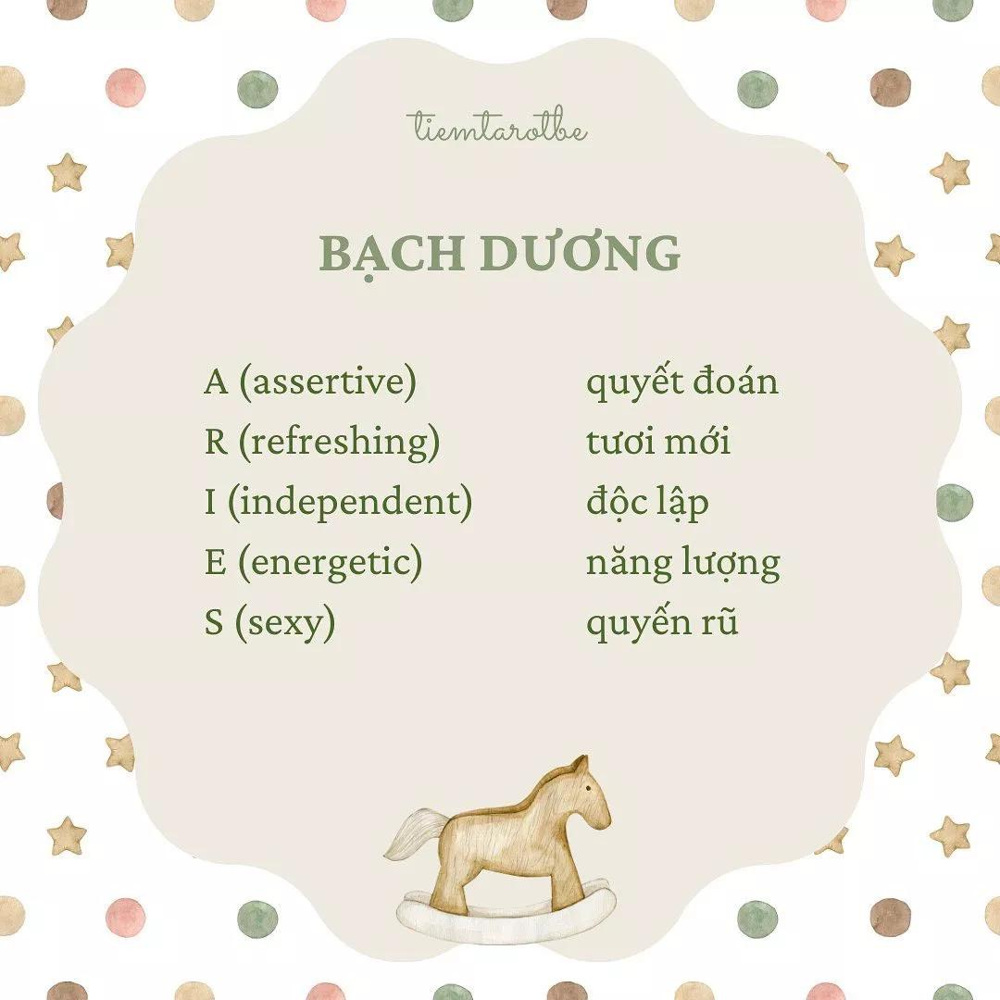
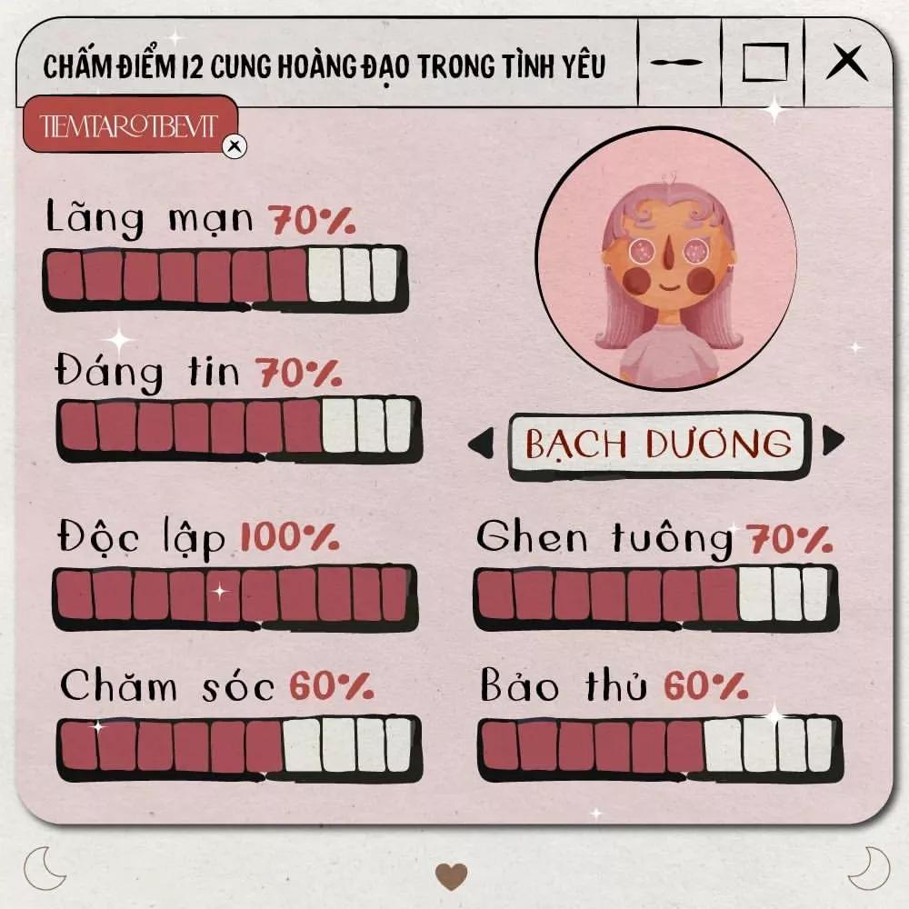

- Người thuộc cung này có tính cách mạnh mẽ, năng động và thích phiêu lưu. Họ luôn sẵn sàng cho những thử thách mới và cố gắng phấn đấu để đạt được mục tiêu đó. Họ cũng rất trung thực, chân thành và có lòng tự trọng cao.
- Bạch Dương thường là những người lãnh đạo tài năng, có khả năng quyết đoán và sáng tạo. Họ không ngại đưa ra những ý tưởng mới mẻ và thực hiện chúng một cách nhanh chóng. Họ cũng rất chịu trách nhiệm và có tinh thần đồng đội tốt.
- Bạch Dương là những người say mê, nồng nhiệt và chung thuỷ. Họ luôn biết cách làm cho đối phương hạnh phúc và thỏa mãn. Họ cũng rất chân thành và không thích sự giả dối. Tuy nhiên, họ dễ bị cuốn vào những mối tình sóng gió do tính cách nóng nảy, bốc đồng và thiếu kiên nhẫn.
